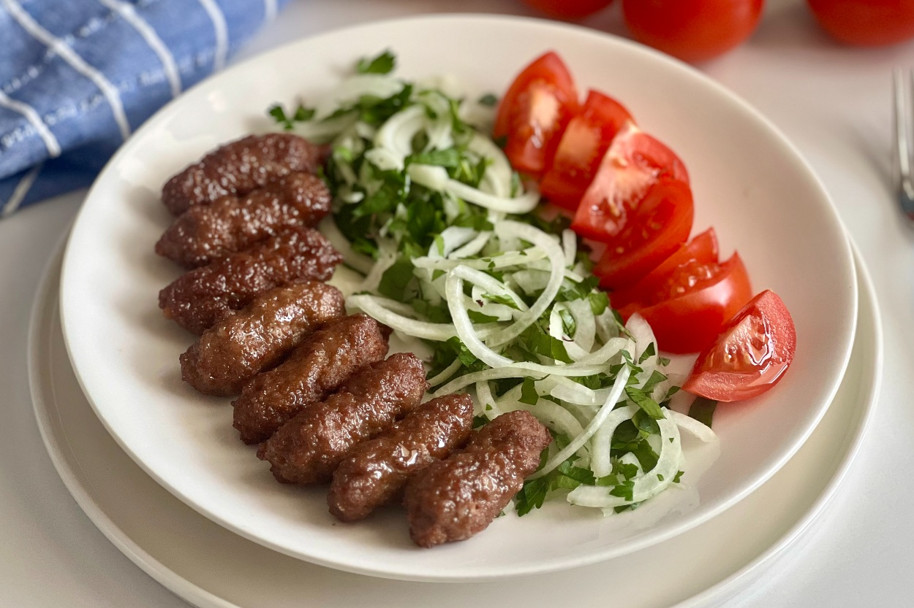
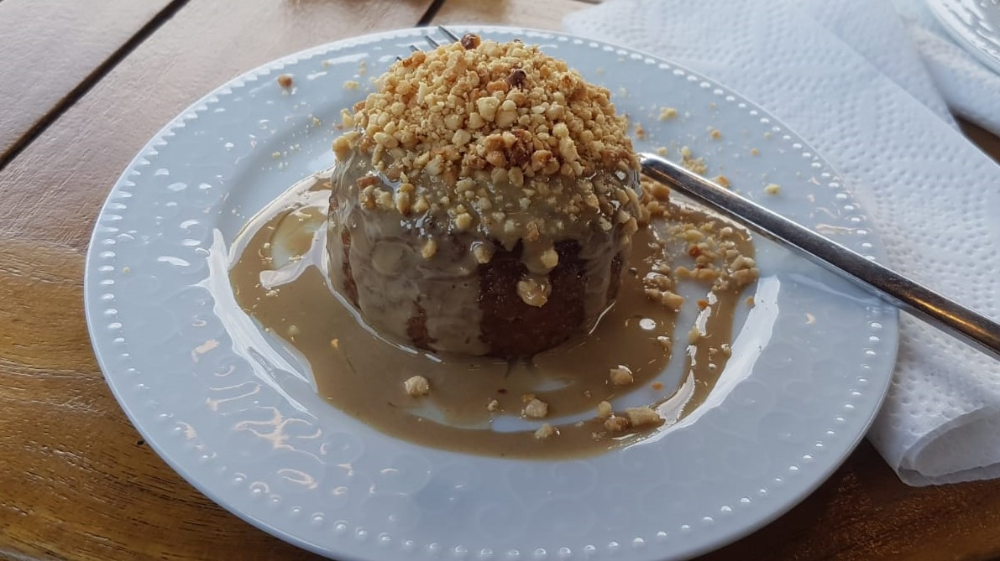

Tekirdağ, Marmara Bölgesi'nde yer alan tarihi ve doğal güzellikleriyle bilinen bir şehirdir. Nüfusu yaklaşık 1 milyon civarındadır. Tarım, sanayi ve turizm açısından gelişmiş bir ilimizdir.
Bunların yanısıra birçok tarihi mekanları ve gezilecek yerleri olan bir şehirdir.
Ayrıca mutfak kültürü de nispeten zengindir
Tekirdağ’a Özgü Yiyecekler

Tekirdağ Köftesi
Tekirdağ köftesi Türkiye'ye gelen Avrupalı turistlerin bildiği bir lezzettir.
Tekirdağ köftesinin yapımında kullanılan dana eti kaburgası yiyeceğe farklı bir tat kazandırmaktadır.
Köfte servis edilirken yanında mutlaka kırmızı biber salçası bulunur.
Hayrabolu Tatlısı
Hayrabol Tatlısı olarakta bilinir. Tekirdağ halkı tarafından çok sevilir
Lor peyniri ile yapılan bir peynir tatlısıdır ve kullanılan lor kesinlikle tuzsuz olmalıdır.
Şerbetli bir tatlıdır.
Kaymak ,fındık kırıntısı ve tahin ile servis edilir

Tekirdağ’dan Yetişen Önemli İsimler
Memduh Şevket Esendal
Modern Türk edebiyatında önemli bir yere sahip olan yazar, Tekirdağ’da doğmuştur. Özellikle kısa öykü türünde verdiği eserlerle tanınır.
Ayrıca Tekirdağ'ın Çorlu ilçesinde Memduh Şevket Esendal'ın ismi verilen bir tiyatro salonu da vardır
Birkaç Eseri: Ayaşlı İle Kiracıları ,Bir Haydut Kuş ,Bir Kucak Çiçek...
Namık Kemal
Vatan, hürriyet ve millet sevgisini işleyen şiir ve yazılarıyla bilinen Namık Kemal, Tekirdağ’da doğmuş ve Türk edebiyatına büyük katkılar sunmuştur.
Birkaç Eseri: İntibah ,Cezmi ,Vatan yahut Silistre...
Bu gezilecek ve tarihi yerlerin bilgileri için yazının üstüne veya alt tarafta bulunan Şehirden Kareler kısmındaki resimlerin üstüne tıklayarak ulaşabilirsiniz